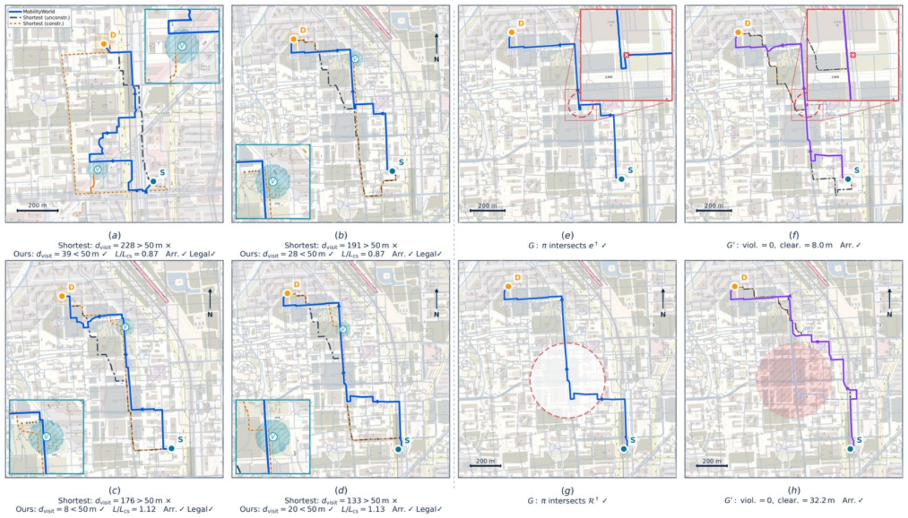

1Problem and significance
Let \(\mathcal{U}\) be a set of human agents. The data are trajectory episodes of time-stamped positioning observations, situated in an external geographic world:
Here \(u_n\in\mathcal{U}\) identifies the agent, \(x_{n,t}\in\mathbb{R}^2\) is a measured location projected into a local metric frame, and \(\tau_{n,t}\) is its timestamp; elapsed intervals vary with acquisition cadence and missing records. \(G\) is a directed, spatially embedded road network whose edges carry polyline geometry and attributes (length, class, directionality, speed, availability), and \(\mathcal{P}\) is a set of categorized points of interest (POIs). For a length-\(T\) episode \(\mathbf{o}=(o_1,\dots,o_T)\), the underlying mobility process is a state–action path
where \(s_t\in\mathbb{R}^{d_s}\) is a predictive latent state, sufficient to explain the current observation and predict subsequent evolution, and \(a_t\in\mathbb{R}^{d_a}\) is an interval-level latent action that carries the process from \(s_t\) to \(s_{t+1}\). Profile, query context, and geography may change which action is supported, but cannot bypass \(a_t\) to set the next state. A task is posed as a query
with query grid \(\mathcal{I}_q\), exposed indices \(\mathcal{O}_q\) and their observations, boundary conditions \(\mathcal{B}_q\), optional behavioral or task conditions \(\varpi_q\), and evaluation world \(W_q\). With valid transitions \(\mathcal{K}_q=\{t: t,t+1\in\mathcal{I}_q\}\), the candidate latent process and the model output are
where \(\Omega_q^{\mathrm{MAP}}\) holds the continuous boundary constraints, \(\Omega_q^{\mathrm{exec}}\) the graph-connected continuations satisfying hard execution constraints, and \(\Theta\) all learnable parameters.
- Observations are poor and actions are absent. Traces are sparse, noisy positions; the decision behind each move is never recorded, and one displacement admits several explanations. Control world models assume observed actions; visual world models assume dense observations.
- Transitions must be executable. Movement is constrained by the road network and shaped by POI semantics, so a continuation is useful only if it is a legal path in \(W_q\). Latent-action models do not enforce this.
- Tasks share one process but are modeled separately. Prediction, generation, completion, re-identification, and staypoint detection are usually separate input–output models, although all observe the same decision-driven process.
The goal is one parameter set \(\Theta\) per dataset that answers every query through three operators on the same reconciled path, with no task-specific heads or fine-tuning:
where \(\varsigma_q\) is the reconciled state, preceding action, fixed profile, and query context from which a continuation begins, \(H_q\) the rollout horizon, \(\mathcal{S}^{\mathrm{exec}}\) the learned local executable score, and \(C_q\) an explicit query cost.
2Research questions
Equation (5) asks one learned process to do three things: reconstruct states and actions from partial evidence (Infer), remain predictive when run forward without observations (Roll), and produce legal continuations under explicit objectives and modified worlds (Plan). Each operator gives a research question; a fourth asks which components are responsible.
| RQ | Question | Addressed by | Evidence |
|---|---|---|---|
| RQ1 | Can one state–action process, reconciled by global MAP, recover enough from partial, noisy, action-free traces to serve anomaly detection, re-identification, staypoint detection, and completion? | Predictive-state encoder, latent action consistency, Global Temporal MAP (§3.1, 3.5–3.6) | Theorems 1–3 (§4); Tables 3–6 |
| RQ2 | Do the action-conditioned dynamics stay predictive under closed-loop rollout with no future observations, for individuals and for populations? | Actor and transition (§3.2), executable interface (§3.3), rollout consistency (§3.4) | Tables 7–8 |
| RQ3 | Can the same process plan graph-legal routes under several hard constraints, and replan when an edge or region is removed? | Executable world interface and Plan operator (§3.3, Eq. 5) | Theorem 4 (§4); Table 9; Figure 2 |
| RQ4 | Which components are responsible: the latent action, consistency learning with global MAP, or world and profile grounding? | Cumulative ablation (§6.4) | Table 10 |
3Method
MobilityWorld has two levels. Locally, a state encoder, a profile memory, a behavioral actor, an action-conditioned transition, and a world-support factor define one transition (§3.1–3.3); Structured Consistency Learning trains them through Predictive State Consistency and Latent Action Consistency (§3.4–3.5). Globally, a differentiable temporal MAP step composes the local factors over the whole query interval (§3.6), and training differentiates through it (§3.7). Algorithm 1 gives the pipeline.
Input: training queries \(\mathcal{D}_{\mathrm{train}}\); world \(W\); test query \(\mathcal{Q}=(\nu_q,\mathcal{E}_q)\). Output: shared \(\Theta\); answer \(\mathcal{M}_\Theta(\mathcal{Q})\).
- Training. for each training query \(q\sim\mathcal{D}_{\mathrm{train}}\):
- encode visible states \(s^\phi_t\sim q_\phi(s_t\mid o_t)\); initialize hidden states from permitted boundaries or model propagation; \(a^{(0)}_t\leftarrow 0\) ▷ Eq. (7)
- \(\widehat{\mathbf{z}}^{(K_{\mathrm{MAP}})}_{\Theta,q}\leftarrow\mathrm{Solve}^{K_{\mathrm{MAP}}}_\Theta(\mathbf{z}^{(0)}_q)\): projected-gradient steps on \(\mathcal{J}_{\mathrm{MAP}}\), restoring boundary states after each step ▷ Eqs. (18)–(20)
- evaluate \(\mathcal{L}_{\mathrm{obs},t}\), \(\mathcal{E}_{\mathrm{tr},t}\), \(\mathcal{L}^{(H)}_{\mathrm{roll},t}\), \(\mathcal{E}_{\mathrm{beh},t}\), \(\mathcal{E}_{\mathrm{world},t}\) on the reconciled path ▷ Eqs. (11)–(16)
- update \(\Theta\) by the gradient of \(\mathcal{L}_{\mathrm{SCL}}\) through the solver ▷ Eqs. (17), (21); implemented objective Eq. (27)
- Query answering (\(\Theta\) fixed): \(\widehat{\mathbf{z}}_q\leftarrow\mathrm{MAP}_\Theta(\mathcal{E}_q)\) with \(K_{\mathrm{MAP}}\) backtracked steps on the exposed evidence ▷ Eq. (19)
- if \(\nu_q=\textsf{Infer}\): return \(\mathrm{Readout}_q(\widehat{\mathbf{z}}_q)\)
- if \(\nu_q=\textsf{Roll}\): from \(\varsigma_q\), repeat \(H_q\) times: enumerate legal continuations, rank them with actor, transition, and world factors, execute the best on \(G\), align its endpoint ▷ Eq. (10)
- if \(\nu_q=\textsf{Plan}\): beam search (width 64) over legal continuation sequences scored by \(\mathcal{S}^{\mathrm{exec}}-C_q\); return the best route that satisfies every hard constraint, else report failure ▷ Eq. (5)
3.1Local transition and predictive state
The architectural primitive is one transition over \((o_t,s_t,a_t,s_{t+1},W_q)\), with five factors:
Here \(h_t=(s_t,a_{t-1},\alpha_q,\varpi_q)\) is the actor context, \(\alpha_q\) a profile summarizing the permitted history \(\mathcal{I}^{\mathrm{hist}}_q\), and \(g_t=\Gamma_{W_q}(\ell_\chi(s_t))\) the local spatial feature. The encoder maps each observation to a diagonal-Gaussian belief from Fourier coordinate features and cyclic local-time features in a gated residual MLP:
This belief initializes, but does not fix, the optimizable state. A metric decoder \(\ell_\chi\) maps the state back to coordinates, and an exponential-moving-average (EMA) copy of the encoder supplies stop-gradient targets \(\bar{s}_t\). In the reported checkpoint \(d_s=32\) and \(d_a=16\); coordinates are normalized by 10,000 m and encoded with 16 log-spaced Fourier bands.
3.2Dynamics and behavioral actor
The transition is a Gaussian mixture whose parameters are produced from \((s_t,a_t)\):
During inference it couples adjacent states through the free action; during rollout it is applied recursively. Each \(a_t\) is a free latent variable optimized jointly with the states. The actor is a multimodal prior over interval-level controls, parameterized as a residual around the previous action:
The residual form captures short-term persistence; \(\alpha_q\) carries longer-term regularity. Both mixtures use \(K_s=K_a=3\) components. Profile, geography, and query conditions affect the next state only by changing which action is selected.
3.3Semantic–geographic world interface
The world enters through two interfaces. The differentiable one evaluates, at the decoded location \(y_t=\ell_\chi(s_t)\), a spatial field \(g_t=\Gamma_{W_q}(y_t)\) of local road attributes and POI semantics; \(\kappa_\omega(s_t,a_t;g_t)\) scores whether an action is supported there. It guides inference but does not guarantee legality. The executable one is \(\mathfrak{E}^{\triangle}_{W_q}=(\mathcal{C}^{\triangle}_{W_q},\zeta_{W_q},\mathrm{Exec}_{W_q},\mathrm{Align}_\chi)\): \(\mathcal{C}^{\triangle}_{W_q}(y_t)\) enumerates graph-legal continuations realizable within one interval (at most 12 outgoing edges), \(\zeta_{W_q}\) maps each into the shared action space, \(\mathrm{Exec}_{W_q}\) returns its exact road geometry and endpoint, and \(\mathrm{Align}_\chi\) reconciles that endpoint with the predicted next state. During rollout and planning the legal candidates are ranked by
where \(\mathcal{S}^{\mathrm{exec}}_\Theta\) combines the actor, transition, and world factors. The selected continuation is executed exactly on \(G\). The road graph therefore determines feasibility, and the learned model determines which feasible continuation is preferred.
3.4Predictive State Consistency
A state that explains one noisy measurement need not predict the next one, and a state that supports one-step prediction may drift under recursion. The state is constrained at three scales. Observation consistency grounds it in coordinates:
Transition consistency requires the action-conditioned prediction from the online state \(s^\phi_t\) to match the stop-gradient EMA target \(\bar{s}_{t+1}\):
Closed-loop rollout consistency starts from \(\widehat{s}_t:=s^\phi_t\) and runs \(H\) steps in which the spatial context is re-queried and the action re-selected at every predicted state:
with \(\widehat{h}_{t+h}=(\widehat{s}_{t+h},\widehat{a}_{t+h-1},\alpha_q,\varpi_q)\). The rollout loss compares predicted and target states in both representation and readout:
3.5Latent Action Consistency and the joint objective
A displacement alone admits several actions. The action is identified operationally by three energies: it must explain the state change (\(\mathcal{E}_{\mathrm{tr},t}\), Eq. 12), remain probable under the causal actor prior, and be supported by the local road–POI world:
Structured Consistency Learning combines both axes:
with all \(\lambda\ge 0\). Observation and rollout terms are summed where their targets exist; energy terms are summed over valid transitions. Positive local curvature of the combined action energy gives a locally unique, perturbation-stable MAP action (Theorem 1).
3.6Global Temporal MAP
Mobility evidence is coupled across time, so the local factors are composed over the complete query interval:
\(\mathcal{L}_{\mathrm{obs}}\) anchors exposed states to positioning evidence, \(\mathcal{L}_{\mathrm{dyn}}\) couples adjacent states through the action-conditioned transition, \(\mathcal{L}_{\mathrm{act}}\) measures plausibility under the profile-conditioned actor, and \(\mathcal{L}_{\mathrm{world}}\) measures geospatial support. These factors define an unnormalized path density \(p(\mathbf{z}_q\mid\mathcal{E}_q)\propto\mathbf{1}[\mathbf{z}_q\in\Omega^{\mathrm{MAP}}_q]\exp\{-\mathcal{J}_{\mathrm{MAP}}(\mathbf{z}_q)\}\), and the reconciled path is its mode:
Both states and actions are optimized. An exposed state may move away from its noisy encoder initialization to agree with neighboring transitions; a missing state is reconstructed from evidence on both temporal sides; each action is adjusted to explain the inferred state change while staying behaviorally plausible and geospatially supported. Hidden states are initialized only from visible boundary information, and their true coordinates are never encoded. At evaluation the solver takes 8 updates (GeoLife) from initial step 0.25, normalizes the joint state–action gradient, restores anchors, halves the step up to 12 times until the objective decreases, and returns the best accepted iterate.
3.7Bilevel training and implemented objective
With \(\Theta\) fixed, the inner solver takes \(K_{\mathrm{MAP}}\) projected-gradient steps on all states and actions; training differentiates through it:
The supplementary material specifies the implemented final-stage objective. Let \(\bar{s}_{t+1}=\mathrm{sg}[\mu_{\bar\phi}(o_{t+1})]\) be the EMA target, \(\hat{s}_{t+1}=\mathbb{E}[p_\theta(\cdot\mid s_t,a_t)]\), and \(\langle\cdot\rangle_m\) a mean over mask \(m\) (\(m^{\mathrm{pair}}\): active transitions, \(m^{\mathrm{obs}}\): observed states). The state terms are
where LN is layer normalization and \(\mathcal{R}_{\mathrm{var}}\) prevents representation collapse. Actions are first discovered from the transition alone, starting at zero, and the actor is then fit to the transition-supported solution \(a^\dagger_t\), so an untrained actor never defines the variable it later models:
with implemented actor context \(\xi_t=(s_t,a_{t-1},\alpha,g_t,c_q)\). Executable grounding scores the legal outgoing edges \(e\in\mathcal{A}_W(v_t)\), each defining a legal action \(\zeta_W(e)\) with endpoint mismatch \(D_t(e)\):
The full final-stage objective is
with the spatial MAP term weighted by \(\lambda_W=0.01\). \(\mathcal{J}_{\mathrm{roll}}\) applies the actor and transition expectations recursively for \(H=5\) steps and averages transition NLL and a 25 m-scaled metric error over all cases and over moving cases. \(\mathcal{J}_{\mathrm{metric}}\) and its actor and per-component variants train a diagnostic decoder of normalized displacement, stay probability \(p^{\mathrm{stay}}_t=\exp[-(\lVert\Delta y_t\rVert/25)^2]\), and speed. \(\mathcal{J}_{\mathrm{world\text{-}cal}}\) calibrates \(\kappa_\omega\) with Smooth-L1 to the target \(\bar{E}^W_t=p^{\mathrm{move}}_t(d^{\mathrm{road}}_t/20)^2+p^{\mathrm{stay}}_t(d^{\mathrm{poi}}_t/50)^2\). \(\mathcal{J}_V\) and \(\mathcal{J}_D\) fit a query-value head and a six-component destination prior. No term uses downstream labels.
4Theoretical analysis (RQ1, RQ3)
The analysis separates model identifiability, recovering a latent parameterization from the observation law, from conditional path identifiability, the local uniqueness of a MAP state–action solution once the learned interfaces are fixed.
Let \(h:\mathcal{A}\to\mathcal{A}\) be a \(C^1\) bijection, \(a'_t=h(a_t)\), and define
Composing every action-dependent interface with \(h^{-1}\) leaves the distribution of positioning trajectories unchanged. Passive trajectories alone therefore cannot identify action coordinates or unique semantic action names.
MobilityWorld fixes an operational coordinate convention (the dense metric action projection, metric diagnostic targets, and deterministic edge-to-action encoding) and makes conditional claims within it. Fix \(\Theta\), the neighboring states, and the query context, and write the action-dependent local MAP energy as \(j_t(a)=\beta_{\mathrm{dyn}}\mathcal{E}_{\mathrm{tr},t}(a)+R_t(a)\), where \(R_t\) collects the behavioral, world, boundary, and neighboring-action terms.
Assumption 1. On a convex neighborhood \(\mathcal{N}_t\) of a stationary action \(a^\star_t\), \(\mathcal{E}_{\mathrm{tr},t}\) and \(R_t\) are \(C^2\) and
Then \(j_t\) is \(\mu_a\)-strongly convex on \(\mathcal{N}_t\) and \(a^\star_t\) is its unique local MAP action. If a perturbed objective \(\tilde{j}_t\) has a stationary point \(\tilde{a}_t\in\mathcal{N}_t\) and \(\sup_{a\in\mathcal{N}_t}\lVert\nabla\tilde{j}_t(a)-\nabla j_t(a)\rVert_2\le\varepsilon\), then
The actor and world terms need not be convex; their most negative curvature only has to be dominated by transition information. In the linear–Gaussian case (Corollary 1, with next-state belief \(\mathcal{N}(\mu_o,R)\), transition \(\mathcal{N}(f+Ba,Q)\), and actor \(\mathcal{N}(\mu_\pi,P)\)) the MAP action is the precision-weighted fusion of the data-implied action \(a_d=\Lambda_d^{-1}\eta_d\) and the behavior-implied action \(\mu_\pi\):
with \(\eta_d=B^\top(R+Q)^{-1}(\mu_o-f)\), \(\Lambda_\pi=P^{-1}\), and \(\Lambda_d\succ 0\). If \(\Lambda_d\) is singular, the positive actor precision still resolves the transition-null directions.
Let \(H_0\succeq 0\) be the local Hessian of the observation–transition–actor objective and \(H_W\succeq 0\) the curvature added by the world and executable-action grounding. If \(\mathrm{null}(H_0)\cap\mathrm{null}(H_W)=\{0\}\), then \(H_0+H_W\succ 0\); if additionally \(H_0\succ 0\),
so the local posterior variance in every direction, and its trace, cannot increase when structural evidence is added.
Linearize the observation, dynamics, actor, and world residuals around a stationary path \(\mathbf{z}=(s_{1:T},a_{1:T-1})\), giving \(J_{\mathrm{quad}}(\mathbf{z})=\tfrac12\sum_r\lVert M_r\mathbf{z}-b_r\rVert^2_{W_r}\) and \(H=\sum_r M_r^\top W_r M_r\). If \(H\succ 0\), then
Without cross-time factors \(H\) is block diagonal and a perturbation at time \(j\) stays local; transition and previous-action factors add off-diagonal blocks, so \(H^{-1}\) propagates evidence into unobserved intervals.
Every route returned by Plan is directed-edge legal in \(W_q\). Let \(J(r)=\sum_k c_k(r)\) be an ideal and \(\widehat{J}(r)=\sum_k\hat{c}_k(r)\) the learned cumulative route energy over routes \(\mathcal{R}^H_q\) of at most \(H\) continuations. If \(|\hat{c}_k-c_k|\le\varepsilon\) on every feasible prefix and search returns \(\hat{r}\) with \(\widehat{J}(\hat{r})\le\min_{r\in\mathcal{R}^H_q}\widehat{J}(r)+\xi\), then for \(r^\star=\arg\min_{r\in\mathcal{R}^H_q}J(r)\)
Legality is exact because it follows from enumerating only legal continuations. The regret bound is conditional on scoring error \(\varepsilon\) and search error \(\xi\); it does not guarantee that bounded search finds a route. Theorems 1–3 are local, second-order statements; mixture transitions and alternative legal routes can still produce several global solutions.
5Experimental protocol
GeoLife (Beijing) has 19,878,589 GPS records from 177 users (10,314 agent-days, irregular cadence with median 2 s); the Atlanta Trajectory Simulation has 43,201,994 records from 1,000 agents (31,000 agent-days, fixed 60 s cadence). Both use OpenStreetMap roads and POIs (GeoLife: 295,755 directed edges, 102,134 POIs; Atlanta: 133,021 edges, 46,525 POIs). Splits are trajectory-disjoint and keep anonymized identities for re-identification. One checkpoint is trained per dataset; every task uses it without fine-tuning or learned heads, and only the query evidence, operator, and readout change.
| Operator | Task | Evidence in \(\mathcal{E}_q\) | Metrics | Baselines |
|---|---|---|---|---|
| Infer | Anomaly detection | Corrupted trajectory: (I) 250 m spatial burst, (II) smooth 250 m offset | AUROC ↑, AUPRC ↑, F1 ↑ | TranAD, LSTM-AE, COPOD, Anomaly Transformer |
| Infer | Disjoint-day re-identification | Query and gallery days, processed separately | mAP ↑, Top-1 ↑, Top-5 ↑ | TrajCL, TULER, AttnTUL |
| Infer | Staypoint detection (Atlanta only) | Complete noisy trajectory | Precision ↑, recall ↑, F1 ↑ | SSPE, HMM-GEM, TrackIntel Hyperband, Temporal DBSCAN, HSW |
| Infer | Masked completion (single / multi mask) | Visible prefix and suffix; one or several hidden spans | RMSE (m) ↓, MAE (m) ↓ | Linear, TrImpute, NAOMI, UniTraj, TransferTraj |
| Infer→Roll | Five-step prediction | Visible prefix only | ADE (m) ↓, FDE (m) ↓ | DeepMove, UniTraj, TransferTraj |
| Roll | Population generation | Demand (origin, destination) and profile context | OD JSD ↓, CPC ↑, trip/radius JSD ↓, route fidelity ↑ | TimeGeo/d-EPR, Semi-Markov, MoveSim, TrajSynVAE |
| Plan | Multi-constraint planning | OD pair, required visit region, length budget, profile | Visit distance, DTW, Overlap@50 m, length ratio, arrival, legality | Unconstrained and constrained shortest path |
| Plan | Counterfactual intervention | Factual support and world \(W'\) with an edge or region removed | Arrival, violations, clearance, length ratio | Shortest feasible path in \(W'\) |
Training uses Adam (learning rate \(10^{-4}\) for the base model, \(10^{-3}\) for world modules), batch size 8, maximum window 256, gradient-norm clipping at 1 per group, EMA momentum 0.99, and one unrolled MAP step at step size \(10^{-4}\). The checkpoint has 673,020 trainable parameters; batch-one neural latency is 1.632 ms at \(T=256\). Planning uses 64 fixed GeoLife origin–destination queries with Beam-64 search.
6Results
6.1Inference from partial observations (RQ1)
| Method | Spatial burst (I) | Smooth offset (II) | ||||
|---|---|---|---|---|---|---|
| AUROC↑ | AUPRC↑ | F1↑ | AUROC↑ | AUPRC↑ | F1↑ | |
| GeoLife | ||||||
| TranAD | .794 | .177 | .687 | .817 | .223 | .730 |
| LSTM-AE | .733 | .086 | .202 | .796 | .116 | .214 |
| COPOD | .839 | .132 | .239 | .835 | .169 | .257 |
| Anomaly Transformer | .911 | .213 | .305 | .934 | .246 | .356 |
| MobilityWorld | .9147 | .2782 | .4179 | .8613 | .2725 | .3815 |
| Atlanta | ||||||
| TranAD | .9771 | .2766 | .4573 | .9706 | .2254 | .3317 |
| LSTM-AE | .9735 | .2154 | .3912 | .9601 | .2020 | .2520 |
| COPOD | .9751 | .2336 | .4567 | .7557 | .1848 | .2798 |
| Anomaly Transformer | .9755 | .2807 | .4265 | .9695 | .2272 | .3575 |
| MobilityWorld | .8398 | .2834 | .4574 | .9169 | .3009 | .4129 |
Finding. MobilityWorld has the best AUPRC under both corruptions on both datasets (for example .3009 against .2272 for smooth offsets on Atlanta). It is not the best on AUROC in three of four settings: on Atlanta spatial bursts it reaches .8398 against .9771 for TranAD. On GeoLife, TranAD has the higher oracle F1 for both corruptions (.687 and .730 against .4179 and .3815).
| Method | mAP↑ | Top-1↑ | Top-5↑ |
|---|---|---|---|
| GeoLife | |||
| TrajCL | .255 | .146 | .344 |
| TULER | .549 | .405 | .730 |
| AttnTUL | .664 | .514 | .811 |
| MobilityWorld | .5621 | .5242 | .8701 |
| Atlanta | |||
| TrajCL | .7006 | .6640 | .7240 |
| TULER | .9037 | .8860 | .9260 |
| AttnTUL | .9149 | .8980 | .9300 |
| MobilityWorld | .9163 | .9010 | .9380 |
Finding. Without a trained identity classifier, the profile-conditioned representation gives the best Top-1 and Top-5 on GeoLife (.5242 and .8701) and leads all three metrics on Atlanta. AttnTUL keeps a higher GeoLife mAP (.664 against .5621).
| Method | P↑ | R↑ | F1↑ |
|---|---|---|---|
| SSPE | .8405 | .6631 | .7413 |
| HMM-GEM | .7412 | .6363 | .6848 |
| TrackIntel Hyperband | .8763 | .7217 | .7915 |
| Temporal DBSCAN | .8591 | .7064 | .7753 |
| HSW | .8670 | .6819 | .7634 |
| MobilityWorld | .9058 | .8985 | .9021 |
Finding. A fixed motion-only readout of the reconciled path, decoded by a two-state Viterbi rule, raises F1 from .7915 (TrackIntel Hyperband) to .9021. Most of the gain is in recall (.7217 → .8985).
| Method | Single mask | Multi mask | ||
|---|---|---|---|---|
| RMSE↓ | MAE↓ | RMSE↓ | MAE↓ | |
| GeoLife | ||||
| Linear | 960.4 | 315.8 | 424.2 | 155.8 |
| TrImpute | 959.2 | 318.0 | 426.7 | 159.6 |
| NAOMI | 594.2 | 351.0 | 657.9 | 410.8 |
| UniTraj | 8719.7 | 7372.9 | 9283.6 | 7680.7 |
| TransferTraj | 5493.7 | 2739.3 | 6254.1 | 3273.5 |
| MobilityWorld | 160.88 | 115.02 | 111.27 | 83.27 |
| Atlanta | ||||
| Linear | 429.153 | 135.3 | 1197.1 | 665.2 |
| TrImpute | 469.8 | 135.4 | 1197.2 | 665.9 |
| NAOMI | 469.6 | 135.4 | 1197.1 | 665.7 |
| UniTraj | 469.4 | 138.1 | 1199.9 | 707.5 |
| TransferTraj | 552.7 | 198.7 | 1201.3 | 696.7 |
| MobilityWorld | 439.93 | 351.27 | 247.454 | 204.939 |
Finding. Completion shows the largest inference gains. On GeoLife multi-mask completion, RMSE falls from 424.2 m (linear interpolation) to 111.27 m; on Atlanta multi-mask, from 1197.1 m to 247.454 m. Atlanta single-mask completion is the exception: many masked spans fall inside stays, which favors the stationary bias of interpolation. There MobilityWorld is second on RMSE (439.93 against 429.153 m) and last on MAE (351.27 m).
6.2Closed-loop rollout (RQ2)
| Method | GeoLife | Atlanta | ||
|---|---|---|---|---|
| ADE↓ | FDE↓ | ADE↓ | FDE↓ | |
| DeepMove | 192.52 | 249.86 | 476.70 | 911.25 |
| UniTraj | 12649.0 | 12693.1 | 3615.53 | 3606.50 |
| TransferTraj | 2572.5 | 2532.4 | 3283.13 | 3209.90 |
| MobilityWorld | 82.30 | 149.12 | 133.76 | 220.51 |
Finding. Without future observations, MobilityWorld has the lowest five-step error on both datasets: ADE 82.30 m against 192.52 m for DeepMove on GeoLife, and 133.76 m against 476.70 m on Atlanta. From five to ten steps its error grows by 1.84× on GeoLife and 3.26× on Atlanta, so recursive error accumulates on Atlanta, although its absolute ten-step error remains the lowest.
| Method | OD JSD↓ | CPC↑ | Trip JSD↓ | Radius JSD↓ | Route↑ |
|---|---|---|---|---|---|
| GeoLife | |||||
| Semi-Markov | .444 | .266 | .114 | .141 | .429 |
| MoveSim | .548 | .102 | .138 | .115 | .129 |
| TrajSynVAE | .680 | .014 | .114 | .120 | .189 |
| MobilityWorld | .0858 | .7734 | .0438 | .0507 | .7734 |
| Atlanta | |||||
| TimeGeo/d-EPR | .0768 | .8524 | .196 | .167 | .8432 |
| Semi-Markov | .0859 | .8344 | .205 | .144 | .8100 |
| MoveSim | .0568 | .8888 | .178 | .146 | .8585 |
| TrajSynVAE | .2859 | .4160 | .200 | .181 | .3852 |
| MobilityWorld | .4201 | .1641 | .129 | .138 | .8628 |
Finding. On GeoLife MobilityWorld leads all five metrics, with OD JSD .0858 against .444 for the best baseline. On Atlanta it leads trip JSD, radius JSD, and route fidelity, but is the weakest method on OD JSD (.4201) and CPC (.1641), where MoveSim reaches .0568 and .8888. The shared process captures individual and route-level dynamics more reliably than aggregate origin–destination flows on Atlanta.
6.3Executable and counterfactual planning (RQ3)

A multi-constraint query requires the route to enter a visit region, stay within a length budget, reach the destination within 50 m, and use only legal directed edges. Over the 64 queries, MobilityWorld routes have mean DTW 39.24 m, Overlap@50 m 0.614, and a length ratio of 0.997 to the constrained shortest path. Table 9 lists the four displayed queries.
| Query | Shortest (unconstr.) \(d_{\mathrm{visit}}\) | MobilityWorld \(d_{\mathrm{visit}}\) | MobilityWorld \(L/L_{\mathrm{cs}}\) | Arrival / legal |
|---|---|---|---|---|
| (a) | 228 (violated) | 39 | 0.87 | yes / yes |
| (b) | 191 (violated) | 28 | 0.87 | yes / yes |
| (c) | 176 (violated) | 8 | 1.12 | yes / yes |
| (d) | 133 (violated) | 20 | 1.13 | yes / yes |
Finding. The unconstrained shortest path misses the visit region in every displayed query (133–228 m away), while MobilityWorld enters it (8–39 m) and arrives on legal edges, at 0.87–1.13 times the constrained-shortest length. In counterfactual planning, every completed route in \(G'\) avoids the intervention with zero violations; the edge case keeps 8.0 m clearance and the region case 32.2 m at 1.130× the shortest feasible length. Exhaustive graph search still has higher coverage.
6.4Component contributions (RQ4)
| Variant | I AUROC↑ | I AUPRC↑ | ADE↓ | FDE↓ | Top-1↑ | Top-5↑ | OD JSD↓ | CPC↑ | Multi RMSE↓ |
|---|---|---|---|---|---|---|---|---|---|
| Transition backbone | .6882 | .1688 | 145.67 | 243.99 | .3333 | .6970 | .4342 | .1875 | 115.89 |
| + Latent action | .9044 | .2740 | 87.36 | 175.25 | .3030 | .6364 | .4200 | .2031 | 114.02 |
| + Consistency, global MAP | .9146 | .3332 | 86.85 | 174.09 | .4933 | .6667 | .4165 | .2031 | 112.95 |
| + World, profile (full) | .9147 | .2782 | 82.30 | 149.12 | .5242 | .8701 | .0858 | .7734 | 111.27 |
Finding. The latent action reduces ADE/FDE from 145.67/243.99 to 87.36/175.25 m and raises spatial-burst AUROC from .6882 to .9044. Consistency learning with global MAP raises spatial-burst AUPRC from .2740 to .3332 and Top-1 from .3030 to .4933. World and profile grounding reduce OD JSD from .4165 to .0858, raise CPC from .2031 to .7734 and Top-5 from .6667 to .8701, but lower spatial-burst AUPRC from .3332 to .2782. Completion RMSE improves monotonically but modestly (single mask 164.69 → 160.88 m, multi mask 115.89 → 111.27 m). Separately, raising MAP refinement from two to four and eight steps improves ADE/FDE by about 13%/28% and 17%/36%, while Road@5 and Overlap@50 change by less than 3%.
Citation
@misc{tian2026mobilityworld,
title = {MobilityWorld: Learning a Structured World Model for Human Mobility via Latent State-Action Dynamics},
author = {Tian, Mingke and Bao, Riyang and Ning, Ruiyu and Yu, Dazhou and Z{\"u}fle, Andreas and Zhao, Liang},
year = {2026},
note = {Under review}
}Key references
- D. Ha and J. Schmidhuber. Recurrent World Models Facilitate Policy Evolution. NeurIPS, 2018.
- D. Hafner, J. Pasukonis, J. Ba, and T. Lillicrap. Mastering Diverse Control Tasks through World Models. Nature 640, 2025.
- D. Schmidt and M. Jiang. Learning to Act without Actions. ICLR, 2024.
- J. Feng, Y. Li, C. Zhang, et al. DeepMove: Predicting Human Mobility with Attentional Recurrent Networks. WWW, 2018.
- Y. Zhu, J. Yu, X. Zhao, et al. UniTraj: Learning a Universal Trajectory Foundation Model from Billion-Scale Worldwide Traces. NeurIPS, 2025.
- Y. Zheng, X. Xie, and W.-Y. Ma. GeoLife: A Collaborative Social Networking Service among User, Location and Trajectory. IEEE Data Engineering Bulletin 33(2), 2010.